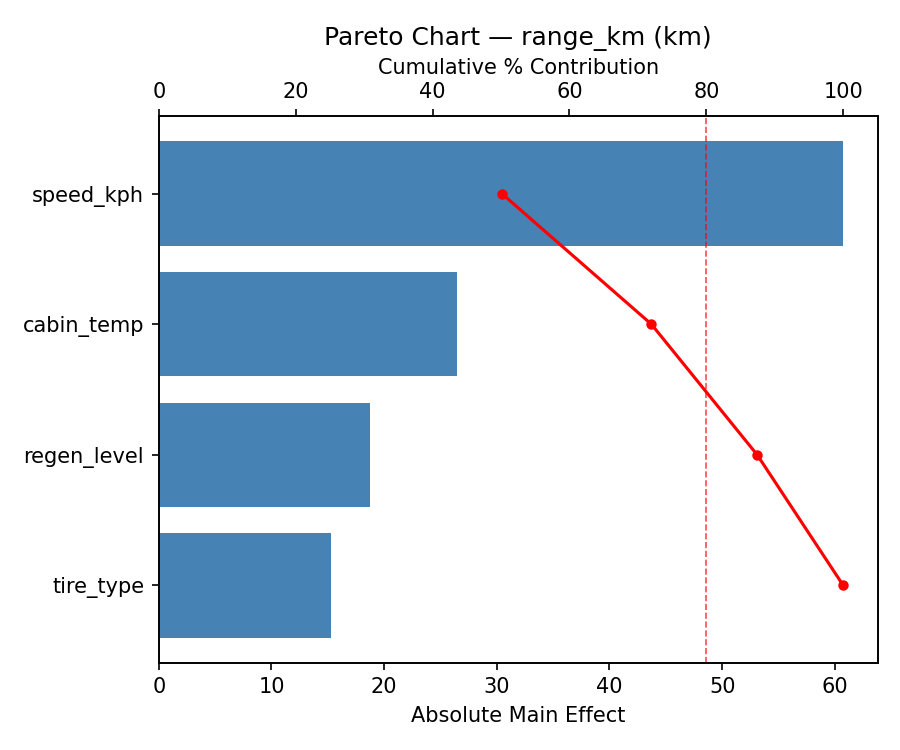
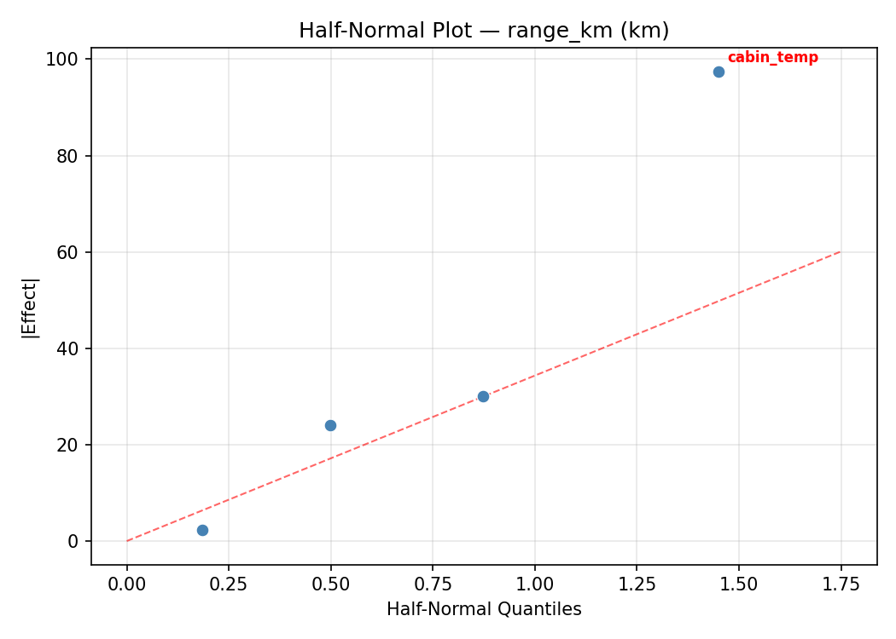
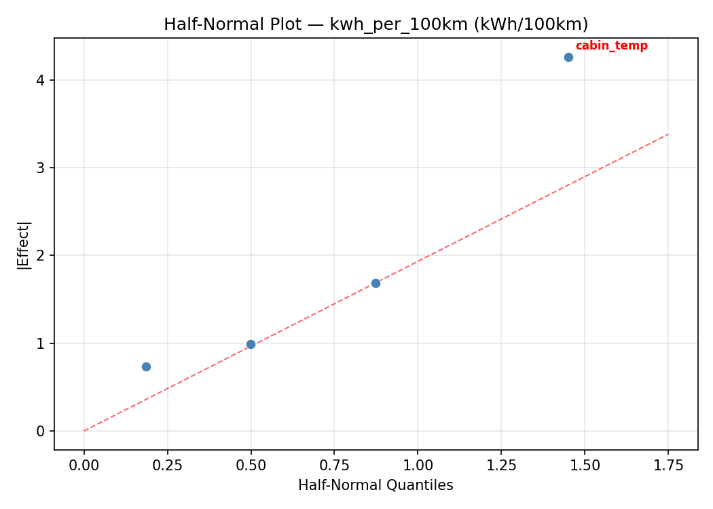
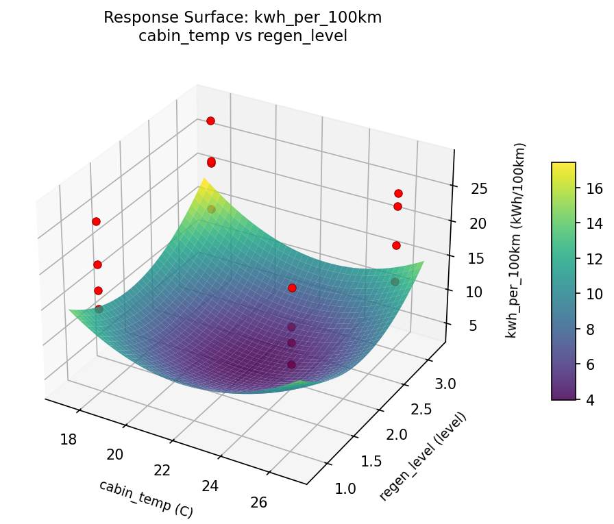
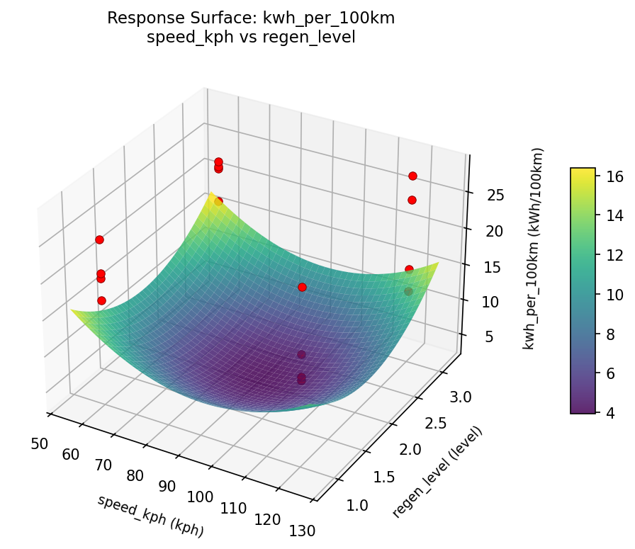
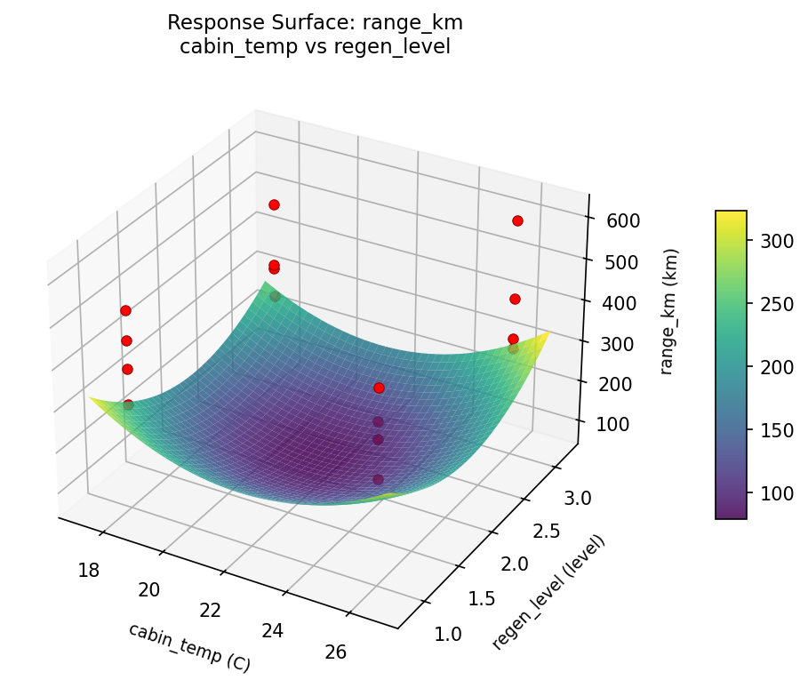
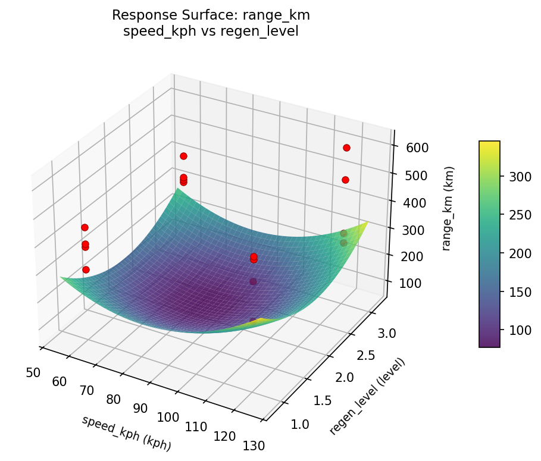

Summary
This experiment investigates ev range optimization. Full factorial of driving speed, cabin temperature, regenerative braking level, and tire type to maximize range and minimize energy consumption.
The design varies 4 factors: speed kph (kph), ranging from 60 to 120, cabin temp (C), ranging from 18 to 26, regen level (level), ranging from 1 to 3, and tire type, ranging from standard to low_rolling. The goal is to optimize 2 responses: range km (km) (maximize) and kwh per 100km (kWh/100km) (minimize). Fixed conditions held constant across all runs include battery kwh = 75, vehicle type = suv.
A full factorial design was used to explore all 16 possible combinations of the 4 factors at two levels. This guarantees that every main effect and interaction can be estimated independently, at the cost of a larger experiment (16 runs).
Quadratic response surface models were fitted to capture potential curvature and factor interactions. The RSM contour plots below visualize how pairs of factors jointly affect each response.
Key Findings
For range km, the most influential factors were cabin temp (51.2%), regen level (25.4%), speed kph (12.4%). The best observed value was 614.0 (at speed kph = 120, cabin temp = 18, regen level = 3).
For kwh per 100km, the most influential factors were cabin temp (68.1%), regen level (23.9%), speed kph (4.6%). The best observed value was 12.3 (at speed kph = 120, cabin temp = 18, regen level = 3).
Recommended Next Steps
- Consider whether any fixed factors should be varied in a future study.
Experimental Setup
Factors
| Factor | Low | High | Unit |
|---|
speed_kph | 60 | 120 | kph |
cabin_temp | 18 | 26 | C |
regen_level | 1 | 3 | level |
tire_type | standard | low_rolling | |
Fixed: battery_kwh = 75, vehicle_type = suv
Responses
| Response | Direction | Unit |
|---|
range_km | ↑ maximize | km |
kwh_per_100km | ↓ minimize | kWh/100km |
Configuration
{
"metadata": {
"name": "EV Range Optimization",
"description": "Full factorial of driving speed, cabin temperature, regenerative braking level, and tire type to maximize range and minimize energy consumption"
},
"factors": [
{
"name": "speed_kph",
"levels": [
"60",
"120"
],
"type": "continuous",
"unit": "kph"
},
{
"name": "cabin_temp",
"levels": [
"18",
"26"
],
"type": "continuous",
"unit": "C"
},
{
"name": "regen_level",
"levels": [
"1",
"3"
],
"type": "continuous",
"unit": "level"
},
{
"name": "tire_type",
"levels": [
"standard",
"low_rolling"
],
"type": "categorical",
"unit": ""
}
],
"fixed_factors": {
"battery_kwh": "75",
"vehicle_type": "suv"
},
"responses": [
{
"name": "range_km",
"optimize": "maximize",
"unit": "km"
},
{
"name": "kwh_per_100km",
"optimize": "minimize",
"unit": "kWh/100km"
}
],
"settings": {
"operation": "full_factorial",
"test_script": "use_cases/119_ev_range_optimization/sim.sh"
}
}
Experimental Matrix
The Full Factorial Design produces 16 runs. Each row is one experiment with specific factor settings.
| Run | speed_kph | cabin_temp | regen_level | tire_type |
|---|
| 1 | 60 | 26 | 3 | low_rolling |
| 2 | 120 | 18 | 1 | low_rolling |
| 3 | 60 | 26 | 1 | low_rolling |
| 4 | 60 | 26 | 3 | standard |
| 5 | 120 | 26 | 3 | standard |
| 6 | 120 | 18 | 3 | standard |
| 7 | 120 | 26 | 1 | standard |
| 8 | 120 | 18 | 1 | standard |
| 9 | 60 | 18 | 1 | low_rolling |
| 10 | 60 | 18 | 3 | standard |
| 11 | 120 | 26 | 1 | low_rolling |
| 12 | 120 | 26 | 3 | low_rolling |
| 13 | 60 | 26 | 1 | standard |
| 14 | 120 | 18 | 3 | low_rolling |
| 15 | 60 | 18 | 1 | standard |
| 16 | 60 | 18 | 3 | low_rolling |
Step-by-Step Workflow
1
Preview the design
$ doe info --config use_cases/119_ev_range_optimization/config.json
2
Generate the runner script
$ doe generate --config use_cases/119_ev_range_optimization/config.json \
--output use_cases/119_ev_range_optimization/results/run.sh --seed 42
3
Execute the experiments
$ bash use_cases/119_ev_range_optimization/results/run.sh
4
Analyze results
$ doe analyze --config use_cases/119_ev_range_optimization/config.json
5
Get optimization recommendations
$ doe optimize --config use_cases/119_ev_range_optimization/config.json
6
Multi-objective optimization
With 2 competing responses, use --multi to find the best compromise via Derringer–Suich desirability.
$ doe optimize --config use_cases/119_ev_range_optimization/config.json --multi
7
Generate the HTML report
$ doe report --config use_cases/119_ev_range_optimization/config.json \
--output use_cases/119_ev_range_optimization/results/report.html
Features Exercised
| Feature | Value |
|---|
| Design type | full_factorial |
| Factor types | continuous (3), categorical (1) |
| Arg style | double-dash |
| Responses | 2 (range_km ↑, kwh_per_100km ↓) |
| Total runs | 16 |
Analysis Results
Generated from actual experiment runs using the DOE Helper Tool.
Response: range_km
Top factors: cabin_temp (51.2%), regen_level (25.4%), speed_kph (12.4%).
ANOVA
| Source | DF | SS | MS | F | p-value |
|---|
| Source | DF | SS | MS | F | p-value |
| speed_kph | 1 | 1482.2500 | 1482.2500 | 0.099 | 0.7654 |
| cabin_temp | 1 | 25281.0000 | 25281.0000 | 1.693 | 0.2499 |
| regen_level | 1 | 6241.0000 | 6241.0000 | 0.418 | 0.5464 |
| tire_type | 1 | 1156.0000 | 1156.0000 | 0.077 | 0.7920 |
| speed_kph*cabin_temp | 1 | 961.0000 | 961.0000 | 0.064 | 0.8098 |
| speed_kph*regen_level | 1 | 49.0000 | 49.0000 | 0.003 | 0.9565 |
| speed_kph*tire_type | 1 | 18769.0000 | 18769.0000 | 1.257 | 0.3131 |
| cabin_temp*regen_level | 1 | 10506.2500 | 10506.2500 | 0.704 | 0.4398 |
| cabin_temp*tire_type | 1 | 5256.2500 | 5256.2500 | 0.352 | 0.5788 |
| regen_level*tire_type | 1 | 2450.2500 | 2450.2500 | 0.164 | 0.7021 |
| Error | 5 | 74651.7500 | 14930.3500 | | |
| Total | 15 | 146803.7500 | 9786.9167 | | |
Pareto Chart

Main Effects Plot

Normal Probability Plot of Effects

Half-Normal Plot of Effects

Model Diagnostics

Response: kwh_per_100km
Top factors: cabin_temp (68.1%), regen_level (23.9%), speed_kph (4.6%).
ANOVA
| Source | DF | SS | MS | F | p-value |
|---|
| Source | DF | SS | MS | F | p-value |
| speed_kph | 1 | 0.3306 | 0.3306 | 0.009 | 0.9279 |
| cabin_temp | 1 | 71.8256 | 71.8256 | 1.968 | 0.2196 |
| regen_level | 1 | 8.8506 | 8.8506 | 0.242 | 0.6433 |
| tire_type | 1 | 0.1806 | 0.1806 | 0.005 | 0.9466 |
| speed_kph*cabin_temp | 1 | 0.0006 | 0.0006 | 0.000 | 0.9969 |
| speed_kph*regen_level | 1 | 1.6256 | 1.6256 | 0.045 | 0.8412 |
| speed_kph*tire_type | 1 | 38.1306 | 38.1306 | 1.045 | 0.3536 |
| cabin_temp*regen_level | 1 | 18.7056 | 18.7056 | 0.512 | 0.5061 |
| cabin_temp*tire_type | 1 | 16.6056 | 16.6056 | 0.455 | 0.5299 |
| regen_level*tire_type | 1 | 6.8906 | 6.8906 | 0.189 | 0.6820 |
| Error | 5 | 182.4981 | 36.4996 | | |
| Total | 15 | 345.6444 | 23.0430 | | |
Pareto Chart

Main Effects Plot

Normal Probability Plot of Effects

Half-Normal Plot of Effects

Model Diagnostics

Response Surface Plots
3D surfaces fitted with quadratic RSM. Red dots are observed data points.
kwh per 100km cabin temp vs regen level

kwh per 100km speed kph vs cabin temp

kwh per 100km speed kph vs regen level

range km cabin temp vs regen level

range km speed kph vs cabin temp

range km speed kph vs regen level

Multi-Objective Optimization
When responses compete, Derringer–Suich desirability finds the best compromise.
Each response is scaled to a 0–1 desirability, then combined via a weighted geometric mean.
Overall Desirability
D = 0.9545
Per-Response Desirability
| Response | Weight | Desirability | Predicted | Dir |
|---|
range_km |
1.5 |
|
614.00 0.9545 614.00 km |
↑ |
kwh_per_100km |
1.0 |
|
12.30 0.9545 12.30 kWh/100km |
↓ |
Recommended Settings
| Factor | Value |
|---|
speed_kph | 60 kph |
cabin_temp | 26 C |
regen_level | 1 level |
tire_type | low_rolling |
Source: from observed run #16
Trade-off Summary
Sacrifice = how much worse than single-objective best.
| Response | Predicted | Best Observed | Sacrifice |
|---|
kwh_per_100km | 12.30 | 12.30 | +0.00 |
Top 3 Runs by Desirability
| Run | D | Factor Settings |
|---|
| #1 | 0.7615 | speed_kph=60, cabin_temp=18, regen_level=1, tire_type=standard |
| #9 | 0.7380 | speed_kph=120, cabin_temp=18, regen_level=3, tire_type=standard |
Model Quality
| Response | R² | Type |
|---|
kwh_per_100km | 0.1828 | linear |
Full Multi-Objective Output
============================================================
MULTI-OBJECTIVE OPTIMIZATION
Method: Derringer-Suich Desirability Function
============================================================
Overall desirability: D = 0.9545
Response Weight Desirability Predicted Direction
---------------------------------------------------------------------
range_km 1.5 0.9545 614.00 km ↑
kwh_per_100km 1.0 0.9545 12.30 kWh/100km ↓
Recommended settings:
speed_kph = 60 kph
cabin_temp = 26 C
regen_level = 1 level
tire_type = low_rolling
(from observed run #16)
Trade-off summary:
range_km: 614.00 (best observed: 614.00, sacrifice: +0.00)
kwh_per_100km: 12.30 (best observed: 12.30, sacrifice: +0.00)
Model quality:
range_km: R² = 0.1863 (linear)
kwh_per_100km: R² = 0.1828 (linear)
Top 3 observed runs by overall desirability:
1. Run #16 (D=0.9545): speed_kph=60, cabin_temp=26, regen_level=1, tire_type=low_rolling
2. Run #1 (D=0.7615): speed_kph=60, cabin_temp=18, regen_level=1, tire_type=standard
3. Run #9 (D=0.7380): speed_kph=120, cabin_temp=18, regen_level=3, tire_type=standard
Full Analysis Output
=== Main Effects: range_km ===
Factor Effect Std Error % Contribution
--------------------------------------------------------------
cabin_temp 79.5000 24.7322 51.2%
regen_level 39.5000 24.7322 25.4%
speed_kph -19.2500 24.7322 12.4%
tire_type 17.0000 24.7322 11.0%
=== ANOVA Table: range_km ===
Source DF SS MS F p-value
-----------------------------------------------------------------------------
speed_kph 1 1482.2500 1482.2500 0.099 0.7654
cabin_temp 1 25281.0000 25281.0000 1.693 0.2499
regen_level 1 6241.0000 6241.0000 0.418 0.5464
tire_type 1 1156.0000 1156.0000 0.077 0.7920
speed_kph*cabin_temp 1 961.0000 961.0000 0.064 0.8098
speed_kph*regen_level 1 49.0000 49.0000 0.003 0.9565
speed_kph*tire_type 1 18769.0000 18769.0000 1.257 0.3131
cabin_temp*regen_level 1 10506.2500 10506.2500 0.704 0.4398
cabin_temp*tire_type 1 5256.2500 5256.2500 0.352 0.5788
regen_level*tire_type 1 2450.2500 2450.2500 0.164 0.7021
Error 5 74651.7500 14930.3500
Total 15 146803.7500 9786.9167
=== Interaction Effects: range_km ===
Factor A Factor B Interaction % Contribution
------------------------------------------------------------------------
speed_kph tire_type -68.5000 34.3%
cabin_temp regen_level 51.2500 25.7%
cabin_temp tire_type 36.2500 18.1%
regen_level tire_type -24.7500 12.4%
speed_kph cabin_temp -15.5000 7.8%
speed_kph regen_level -3.5000 1.8%
=== Summary Statistics: range_km ===
speed_kph:
Level N Mean Std Min Max
------------------------------------------------------------
120 8 409.7500 122.8864 294.0000 614.0000
60 8 390.5000 75.2273 269.0000 498.0000
cabin_temp:
Level N Mean Std Min Max
------------------------------------------------------------
18 8 360.3750 92.6313 269.0000 511.0000
26 8 439.8750 93.7008 304.0000 614.0000
regen_level:
Level N Mean Std Min Max
------------------------------------------------------------
1 8 380.3750 80.9831 269.0000 511.0000
3 8 419.8750 116.2847 294.0000 614.0000
tire_type:
Level N Mean Std Min Max
------------------------------------------------------------
low_rolling 8 391.6250 86.7853 297.0000 520.0000
standard 8 408.6250 115.2177 269.0000 614.0000
=== Main Effects: kwh_per_100km ===
Factor Effect Std Error % Contribution
--------------------------------------------------------------
cabin_temp -4.2375 1.2001 68.1%
regen_level -1.4875 1.2001 23.9%
speed_kph 0.2875 1.2001 4.6%
tire_type -0.2125 1.2001 3.4%
=== ANOVA Table: kwh_per_100km ===
Source DF SS MS F p-value
-----------------------------------------------------------------------------
speed_kph 1 0.3306 0.3306 0.009 0.9279
cabin_temp 1 71.8256 71.8256 1.968 0.2196
regen_level 1 8.8506 8.8506 0.242 0.6433
tire_type 1 0.1806 0.1806 0.005 0.9466
speed_kph*cabin_temp 1 0.0006 0.0006 0.000 0.9969
speed_kph*regen_level 1 1.6256 1.6256 0.045 0.8412
speed_kph*tire_type 1 38.1306 38.1306 1.045 0.3536
cabin_temp*regen_level 1 18.7056 18.7056 0.512 0.5061
cabin_temp*tire_type 1 16.6056 16.6056 0.455 0.5299
regen_level*tire_type 1 6.8906 6.8906 0.189 0.6820
Error 5 182.4981 36.4996
Total 15 345.6444 23.0430
=== Interaction Effects: kwh_per_100km ===
Factor A Factor B Interaction % Contribution
------------------------------------------------------------------------
speed_kph tire_type 3.0875 33.4%
cabin_temp regen_level -2.1625 23.4%
cabin_temp tire_type -2.0375 22.0%
regen_level tire_type 1.3125 14.2%
speed_kph regen_level -0.6375 6.9%
speed_kph cabin_temp 0.0125 0.1%
=== Summary Statistics: kwh_per_100km ===
speed_kph:
Level N Mean Std Min Max
------------------------------------------------------------
120 8 19.8750 5.5895 12.3000 26.4000
60 8 20.1625 4.2530 15.4000 28.2000
cabin_temp:
Level N Mean Std Min Max
------------------------------------------------------------
18 8 22.1375 4.8966 14.5000 28.2000
26 8 17.9000 3.8910 12.3000 24.9000
regen_level:
Level N Mean Std Min Max
------------------------------------------------------------
1 8 20.7625 4.5318 14.5000 28.2000
3 8 19.2750 5.2513 12.3000 26.4000
tire_type:
Level N Mean Std Min Max
------------------------------------------------------------
low_rolling 8 20.1250 4.2439 14.1000 25.0000
standard 8 19.9125 5.5983 12.3000 28.2000
Optimization Recommendations
=== Optimization: range_km ===
Direction: maximize
Best observed run: #16
speed_kph = 120
cabin_temp = 18
regen_level = 3
tire_type = standard
Value: 614.0
RSM Model (linear, R² = 0.2156, Adj R² = -0.0696):
Coefficients:
intercept +400.1250
speed_kph +39.3750
cabin_temp -14.5000
regen_level -13.7500
tire_type +5.3750
RSM Model (quadratic, R² = 0.4733, Adj R² = -6.9008):
Coefficients:
intercept +80.0250
speed_kph +39.3750
cabin_temp -14.5000
regen_level -13.7500
tire_type +5.3750
speed_kph*cabin_temp -34.5000
speed_kph*regen_level -3.5000
speed_kph*tire_type -16.3750
cabin_temp*regen_level +0.6250
cabin_temp*tire_type +4.7500
regen_level*tire_type +29.5000
speed_kph^2 +80.0250
cabin_temp^2 +80.0250
regen_level^2 +80.0250
tire_type^2 +80.0250
Curvature analysis:
tire_type coef=+80.0250 convex (has a minimum)
speed_kph coef=+80.0250 convex (has a minimum)
regen_level coef=+80.0250 convex (has a minimum)
cabin_temp coef=+80.0250 convex (has a minimum)
Notable interactions:
speed_kph*cabin_temp coef=-34.5000 (antagonistic)
regen_level*tire_type coef=+29.5000 (synergistic)
speed_kph*tire_type coef=-16.3750 (antagonistic)
cabin_temp*tire_type coef=+4.7500 (synergistic)
speed_kph*regen_level coef=-3.5000 (antagonistic)
cabin_temp*regen_level coef=+0.6250 (synergistic)
Predicted optimum (from linear model, at observed points):
speed_kph = 120
cabin_temp = 18
regen_level = 1
tire_type = standard
Predicted value: 473.1250
Surface optimum (via L-BFGS-B, linear model):
speed_kph = 120
cabin_temp = 18
regen_level = 1
tire_type = low_rolling
Predicted value: 473.1250
Model quality: Weak fit — consider adding center points or using a different design.
Factor importance:
1. speed_kph (effect: -78.8, contribution: 53.9%)
2. cabin_temp (effect: -29.0, contribution: 19.9%)
3. regen_level (effect: -27.5, contribution: 18.8%)
4. tire_type (effect: 10.8, contribution: 7.4%)
=== Optimization: kwh_per_100km ===
Direction: minimize
Best observed run: #16
speed_kph = 120
cabin_temp = 18
regen_level = 3
tire_type = standard
Value: 12.3
RSM Model (linear, R² = 0.2392, Adj R² = -0.0375):
Coefficients:
intercept +20.0188
speed_kph -1.9312
cabin_temp +0.6313
regen_level +1.0187
tire_type +0.0187
RSM Model (quadratic, R² = 0.4427, Adj R² = -7.3600):
Coefficients:
intercept +4.0038
speed_kph -1.9312
cabin_temp +0.6312
regen_level +1.0187
tire_type +0.0187
speed_kph*cabin_temp +1.4812
speed_kph*regen_level +0.2187
speed_kph*tire_type +0.8937
cabin_temp*regen_level -0.4187
cabin_temp*tire_type -0.6688
regen_level*tire_type -0.8562
speed_kph^2 +4.0037
cabin_temp^2 +4.0038
regen_level^2 +4.0038
tire_type^2 +4.0038
Curvature analysis:
cabin_temp coef=+4.0038 convex (has a minimum)
regen_level coef=+4.0038 convex (has a minimum)
tire_type coef=+4.0038 convex (has a minimum)
speed_kph coef=+4.0037 convex (has a minimum)
Notable interactions:
speed_kph*cabin_temp coef=+1.4812 (synergistic)
speed_kph*tire_type coef=+0.8937 (synergistic)
regen_level*tire_type coef=-0.8562 (antagonistic)
cabin_temp*tire_type coef=-0.6688 (antagonistic)
cabin_temp*regen_level coef=-0.4187 (antagonistic)
Predicted optimum (from linear model, at observed points):
speed_kph = 60
cabin_temp = 26
regen_level = 3
tire_type = standard
Predicted value: 23.6188
Surface optimum (via L-BFGS-B, linear model):
speed_kph = 120
cabin_temp = 18
regen_level = 1
tire_type = standard
Predicted value: 16.4188
Model quality: Weak fit — consider adding center points or using a different design.
Factor importance:
1. speed_kph (effect: 3.9, contribution: 53.6%)
2. regen_level (effect: 2.0, contribution: 28.3%)
3. cabin_temp (effect: 1.3, contribution: 17.5%)
4. tire_type (effect: 0.0, contribution: 0.5%)